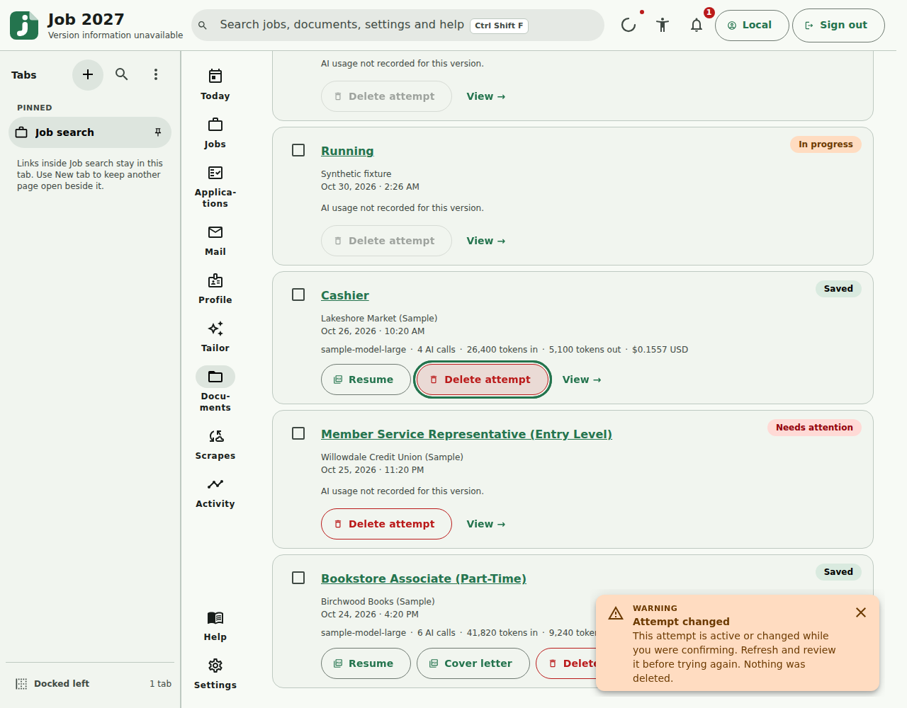

Historical · source 8ed6393 · light · English interface
Changed attempt conflict
The interface reports that the attempt changed during confirmation and no deletion occurred.
- Recorded at
- 2026-10-30T06:26:15.486072+00:00 (America/Toronto)
- Viewport / DPR
- 1280 × 1000 CSS pixels · 1×
- Image SHA-256
521003950e44db32f2325e0ea07d811002e26f71e6a417305f22b7ef3d84c1a2- Build manifest SHA-256
6f952867804e6e1c6bf4a2da7b42bb623b2c801c2bfd3e91acb705c58ed0a0a6
Visible state only; it does not prove unrelated application behavior. Focused source-bound evidence, not full layout, keyboard or screen-reader acceptance. Isolated WSL/Linux Playwright evidence; not native Windows DPI or headless GUI input.